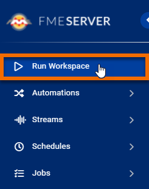
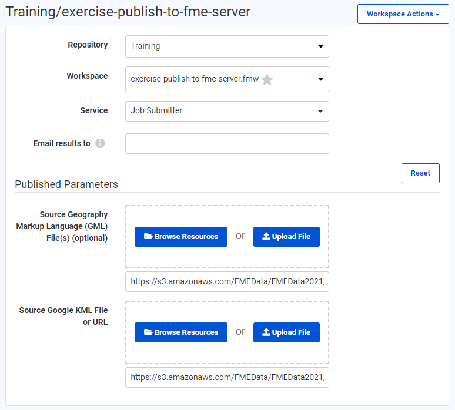
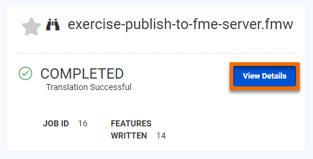
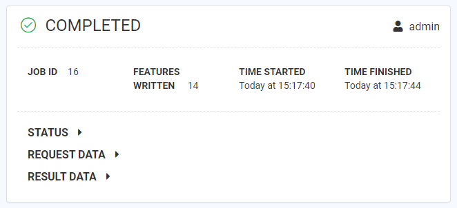

After completing this unit, you’ll be able to:
After publishing your workspace, one of the most common next steps is to run the workspace via FME Server.
If you have recently published your workspace, you can find the link to it in the Translation Log. In the last exercise, the Log reported that our published workspace can be found at http://localhost/fmeserver/#/workspaces/run/Training/exercise-publish-to-fme-server.fmw. Simply click that link to open the workspace on your locally-hosted FME Server.
If you want to run a workspace that is already published, just log on to FME Server (2021.1 or later) and click Run Workspace on the sidebar.

Before running the workspace, you should check that the parameters are correct. Fill out the Run Workspace page using these parameters:
| Repository | Training |
| Workspace | exercise-publish-to-fme-server.fmw |
| Service | Job Submitter |
| Source Geography Markup Language (GML) File(s) (optional) |
https://s3.amazonaws.com/FMEData/FMEData2021/Data/Emergency/FireHalls.gml |
| Source Google KML File or URL |
https://s3.amazonaws.com/FMEData/FMEData2021/Data/Boundaries/VancouverNeighborhoods.kml |
Your dialog should look like this:

Once the parameters are configured, click Run.
This workspace uses a NULL writer, so no data is actually written. You should see that 14 features successfully passed to the writer though. You can click View Details to view information about the job.

The Job detail page shows that the workspace ran successfully.
